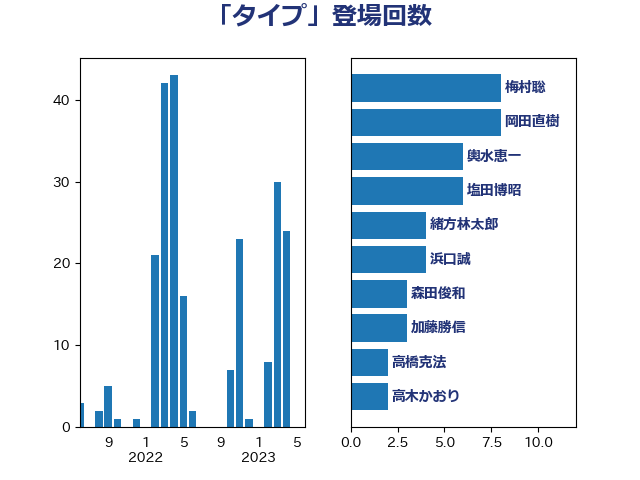

単語「タイプ」

| 梅村聡 | 日本維新の会 | 8 回 |
| 岡田直樹 | 自由民主党 | 8 回 |
| 輿水恵一 | 公明党 | 6 回 |
| 塩田博昭 | 公明党 | 6 回 |
| 緒方林太郎 | 無所属 | 4 回 |
| 浜口誠 | 国民民主党 | 4 回 |
| 森田俊和 | 立憲民主党 | 3 回 |
| 加藤勝信 | 自由民主党 | 3 回 |
| 高橋克法 | 自由民主党 | 2 回 |
| 高木かおり | 日本維新の会 | 2 回 |
| 石田昌宏 | 自由民主党 | 2 回 |
| 玉木雄一郎 | 国民民主党 | 2 回 |
| 片山大介 | 日本維新の会 | 2 回 |
| 湯原俊二 | 立憲民主党 | 2 回 |
| 木村英子 | れいわ新選組 | 2 回 |
| 後藤茂之 | 自由民主党 | 2 回 |
| 山際大志郎 | 自由民主党 | 2 回 |
| 山崎正恭 | 公明党 | 2 回 |
| 中川郁子 | 自由民主党 | 2 回 |
| 高橋千鶴子 | 日本共産党 | 1 回 |
| 高橋光男 | 公明党 | 1 回 |
| 高木真理 | 立憲民主党 | 1 回 |
| 青柳仁士 | 日本維新の会 | 1 回 |
| 青山繁晴 | 自由民主党 | 1 回 |
| 阿部知子 | 立憲民主党 | 1 回 |
| 阿部司 | 日本維新の会 | 1 回 |
| 長浜博行 | 無所属 | 1 回 |
| 鈴木敦 | 国民民主党 | 1 回 |
| 鈴木宗男 | 日本維新の会 | 1 回 |
| 金城泰邦 | 公明党 | 1 回 |
| 野田聖子 | 自由民主党 | 1 回 |
| 野田佳彦 | 立憲民主党 | 1 回 |
| 辻元清美 | 立憲民主党 | 1 回 |
| 足立敏之 | 自由民主党 | 1 回 |
| 足立康史 | 日本維新の会 | 1 回 |
| 赤羽一嘉 | 公明党 | 1 回 |
| 西村康稔 | 自由民主党 | 1 回 |
| 西岡秀子 | 国民民主党 | 1 回 |
| 萩生田光一 | 自由民主党 | 1 回 |
| 菅義偉 | 自由民主党 | 1 回 |
| 緑川貴士 | 立憲民主党 | 1 回 |
| 米山隆一 | 立憲民主党 | 1 回 |
| 竹内真二 | 公明党 | 1 回 |
| 穀田恵二 | 日本共産党 | 1 回 |
| 福島伸享 | 無所属 | 1 回 |
| 福山哲郎 | 立憲民主党 | 1 回 |
| 石井章 | 日本維新の会 | 1 回 |
| 田村まみ | 国民民主党 | 1 回 |
| 生稲晃子 | 自由民主党 | 1 回 |
| 牧島かれん | 自由民主党 | 1 回 |
| 片山さつき | 自由民主党 | 1 回 |
| 浮島智子 | 公明党 | 1 回 |
| 河野太郎 | 自由民主党 | 1 回 |
| 水野素子 | 立憲民主党 | 1 回 |
| 武部新 | 自由民主党 | 1 回 |
| 櫻井周 | 立憲民主党 | 1 回 |
| 梅村みずほ | 日本維新の会 | 1 回 |
| 松沢成文 | 日本維新の会 | 1 回 |
| 杉田水脈 | 自由民主党 | 1 回 |
| 末松信介 | 自由民主党 | 1 回 |
| 斉藤鉄夫 | 公明党 | 1 回 |
| 山田勝彦 | 立憲民主党 | 1 回 |
| 小沢雅仁 | 立憲民主党 | 1 回 |
| 小森卓郎 | 自由民主党 | 1 回 |
| 小林鷹之 | 自由民主党 | 1 回 |
| 小倉將信 | 自由民主党 | 1 回 |
| 安江伸夫 | 公明党 | 1 回 |
| 塩崎彰久 | 自由民主党 | 1 回 |
| 堤かなめ | 立憲民主党 | 1 回 |
| 堀場幸子 | 日本維新の会 | 1 回 |
| 國重徹 | 公明党 | 1 回 |
| 国光あやの | 自由民主党 | 1 回 |
| 和田有一朗 | 日本維新の会 | 1 回 |
| 古賀之士 | 立憲民主党 | 1 回 |
| 友納理緒 | 自由民主党 | 1 回 |
| 伴野豊 | 立憲民主党 | 1 回 |
| 井上哲士 | 日本共産党 | 1 回 |
| 中田宏 | 自由民主党 | 1 回 |
| 中川宏昌 | 公明党 | 1 回 |
| 上田清司 | 国民民主党 | 1 回 |